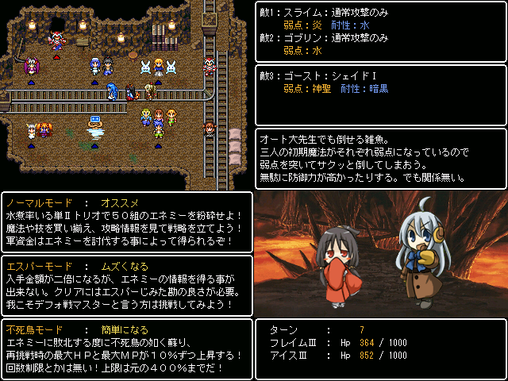

| No.03 | 単ⅡトリオWFS |
 |
|
| 提出済 36.1MB 最終更新：05/26 感想掲示板 | |
| 作者 | ビヨビヨアーク |
| ジャンル | デフォ戦ハクスラ |
| ツクール | 2000 |
| 配信／投稿 | 2013年の5月中はダメ、6月以降なら大丈夫 |
| 作者コメント | |
| 概要：某水三姉妹ハクスラのオマージュ作品です。 自分なりにデフォ戦でハクスラやってみました。 ウォーター、ファイア、セイントの単Ⅱトリオが主人公。 妙にムズイけど話なんて殆ど無いので途中で投げても大丈夫。 戦闘以外に見所は無いので、デフォ戦嫌いは回れ右。（泣） 警告：今作では水煮は俺っ子じゃないので、 水煮は俺っ子しか認めないって人は絶対に触れないように。 左上：△マーク付いているのがエネミーだよ。 青がザコで赤がボス。それ以外はモブね。 右上：敵の弱点や行動パターン等を確認出来る。 敵の耐性をまとめたpdfファイルも同梱予定。 左下：選べる３つのモード。 不死鳥ごりおし、エスパーpdf、ノーマルFATAL等 自分のプレイスタイルで遊べるよ。 右下：毎ターン敵Hpを表示 ・・・無いとやってられない難易度。 | |
| 管理人コメント | |
| 俺っ子の水煮 僕っ子の水煮 そこにいるだけの水煮 みんな違ってみんないい | |